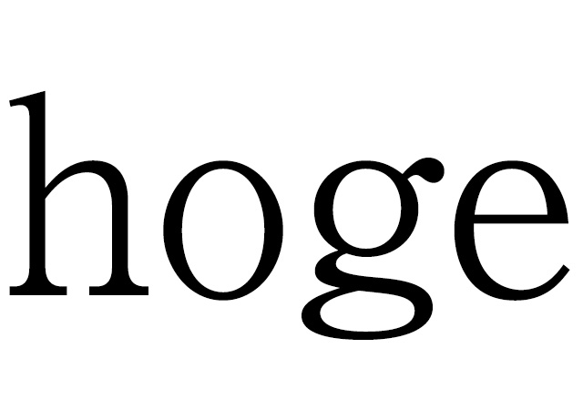

球技大会
▼開催日
▼開催場所
| 競技種目 | 晴天時 | 雨天時 |
| サッカー | piyopiyo | hogehoge |
| バレーボール | piyopiyo | hogehoge |
| バスケットボール | piyopiyo | hogehoge |
| アルティメット | piyopiyo | hogehoge |
| ドッジボール | piyopiyo | hogehoge |
▼トーナメント表
サッカー
バレーボール
バスケットボール
アルティメット
ドッヂボール
▼タイムスケジュール
Loading...
| ほげほげ | ふがふが | ころころ | ふがふが | ころころ |
| 10:00 | hogehoge | hogehogeほげほげｆじゃをいｆじゃをｊふぉ；じぇ | hogehoge | hogehoge |
| 10:00 | hogehoge | hogehoge | hogehoge | hogehoge |
| 10:00 | hogehoge | hogehoge | hogehoge | hogehoge |
| 10:00 | hogehoge | hogehoge | hogehoge | hogehoge |
| 10:00 | hogehoge | hogehoge | hogehoge | hogehoge |
| 10:00 | hogehoge | hogehoge | hogehoge | hogehoge |
| 10:00 | hogehoge | hogehoge | hogehoge | hogehoge |
| 10:00 | hogehoge | hogehoge | hogehoge | hogehoge |
| 10:00 | hogehoge | hogehoge | hogehoge | hogehoge |
| 10:00 | hogehoge | hogehoge | hogehoge | hogehoge |
▼ルール
▼得点配分
▼サッカー
▼バスケ
▼バレー
▼アルティメット
▼ドッヂボール
▼女子フットサル
▼追いかけ玉入れ
▼玉入れ